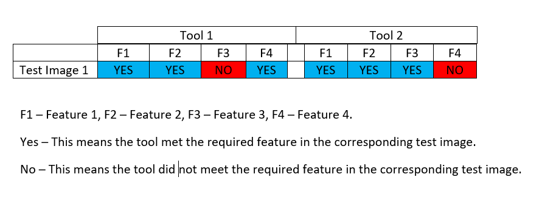

Deleted File Recovery
An evaluation of different deleted file recovery tools that includes the methods used for testing and the research findings.
A. Background
Digital forensic tools are used for post-mortem investigation of cyber-crimes and cyber-attacks both in corporate and government organizations. National Institute of Standards and Technology (NIST)’s Computer Forensics Tool Testing Program (CFTT) established standards for digital forensic tools to help determine the quality and integrity of such tools. The quality and integrity of these tools are especially important in judicial proceedings. Using a forensic tool that does not follow the standards may cause evidence to be thrown out in court cases (which are increasingly reliant on digital data). Consequently, incorrect results from a forensic tool can also lead improper prosecution of an innocent defendant. The focus of our proposed research is about standardization of one class of forensic tools that are for Deleted File Recovery (DFR). The CFTT standard for DFR tools consists of four core features and a set of optional features.
B. Process
In order to test DFR tools, we had to simulate real-world file recovery challenges. With the help of our test cases, we create the scenarios in real file system and save them as raw images. Using these raw images as input, we run each DRF tool and attempt to recover all deleted files. Finally, we compare the recoverd files to their original versions in order to judge the tools' compliance with NIST standards.
1. Generating Test Cases:
To generate test cases, users need to have a USB drive and create partitions in them (USB drives). The following are the steps used to create the intended file system inside the partition.
a. Zero out partition (make sure the USB drive is entirely empty).
b. Use standard files (size and contents) to fill up the USB drive with scenario.
c. Delete the files that are intended to be recovered.
d. Create raw image of partition using dd tool.
2. Evaluating DFR Tools: For each tool, the following steps were followed
a. Use the generated image as input into the DFR software. An example of feeding a test image into a dfr tool is shown here.
b. Analyze results compared to NIST Standards.
C. Test Cases
We created the cases with different scenarios in mind and possibilities of users deleting data. Here are a few examples of very common instances from the test cases that can be used to evaluate DFR tools.
Case 1 (Data is deleted). This case is the base standard for all tools. The purpose of this case is to test all the tools to see if they identify and recover a single deleted file. Criminals or users can inadvertently delete critical data and believe it is gone forever.
Case 4i (Data is deleted and overwritten in hopes of not being found). This test is a bit more complicated, for both the tool and how it happens. It is possible to find methods and tools that promise creating a new file to ensure the deleted file is gone forever. By overwriting the first portion of the deleted file, the goal is to prevent the tool from recognizing A. However, according to NIST standards, the tools should be able to recover as much of file A as possible without recovering file B.
All test cases and disk images that were used for testing can be viewed and downloaded here.
D. Results
Results Interpretation
When files are recovered, we compare them with the original files to determine if all the core features were met or not. The following are the core features [1] used check a tools reliability as required by NIST;
DFR-CR-01 The tool shall identify all deleted File System-Object entries accessible in residual metadata.
DFR-CR-02 The tool shall construct a Recovered Object for each deleted File System Object entry
accessible in residual metadata.
DFR-CR-03 Each Recovered Object shall include all non-allocated data blocks identified in a residual
metadata entry.
DFR-CR-04 Each Recovered Object shall consist only of data blocks from the Deleted Block Pool.
The rows in each table below represent test cases while the columns represent the core features. The first table is used to evaluate Autopsy (as an example), in each test case of FAT file system. Where as the second table is for Autopsy in each test case of NTFS file system.

As an example let’s analyse row number 3 (FAT 3) in the first table: Autopsy has blue for the first three features and red for feature number 4. This means that the tool is able to meet core requirement 1, 2 and 3 but failed to meet core requirement 4 (which requires the recovered file to only have data from the Deleted Block Pool).
In the second table, Autopsy has blue for all 4 features in row number 3 (NTFS 3). This simply means all the core features were met by Autopsy, as the recovered file was identical to the deleted file.
To view the results of all test cases with all of the tools that were used, click here.
E. Conclusion
Based on the data collected, a few conclusions can be made. DFR tools had better results when run on NTFS file systems instead of FAT. This can be because of how the different file systems store the metadata surrounding a file. In NTFS it is easier for DFR tools to determine what is a deleted file, and what should not be recovered. However, even in NTFS a stronger conclusion can be made that none of the DFR tools tested meet the core standards as defined by NIST. Only in the easiest and simplest cases do all tools properly recover the file. For a more meaningful conclusion, there are two possibilities. Either the tools are not good enough, or the standards themselves are insufficient. The majority of failures were on the grounds of the third and fourth core features. DFR-CR-03 states that a tool must recover “all non-allocated data blocks identified in a residual metadata entry.” In other words, all sections of the drive indicated by file system structures as belonging to the deleted file, besides those which have been reassigned to a new file, should be recovered. This is reasonable; however, the meaning varies depending on what is considered “residual metadata,” which differs based on the file system. For example, in the FAT file system, the only information about a deleted file is the file size and starting location on the disk. If the file is fragmented into multiple parts, there is no direct evidence of it. In this situation we determined that only the first fragment must be recovered, because residual metadata gives no information about fragmentation. DFR-CR-04 states that a tool must only recover “data blocks from the Deleted Block Pool.” In other words, all of the data in the recovered file must be from the original deleted file. There are some situations in which this is impossible for the tool to determine with certainty. The test cases 5i-5iv illustrate this. When a deleted file is overwritten by a second file, and then the second file is deleted as well, there is no way to tell which file overwrote which. Both FAT and NTFS store time information about files; however, that information is non-essential metadata, meaning it is not necessary for the operation of the file system and can thus be altered without consequence. With just the essential metadata, in this case simply the locations of each file on the disk, the tool must guess which file came first to avoid violating the fourth core feature. If it makes a conservative estimate and only recovers the parts of each file that don’t overlap the other, it would fail to fulfill the third core feature. File recovery is not an exact science, and there are many cases where metadata is simply not enough to properly recover a file. For the standards to be realistic, they must be more specific about what constitutes “residual metadata” for various types of file systems and resolve situations where the third and fourth core features will be in conflict.
Reference
[1] https://www.nist.gov/system/files/documents/2017/04/28/DFR-req-1-1-pd-01.pdf